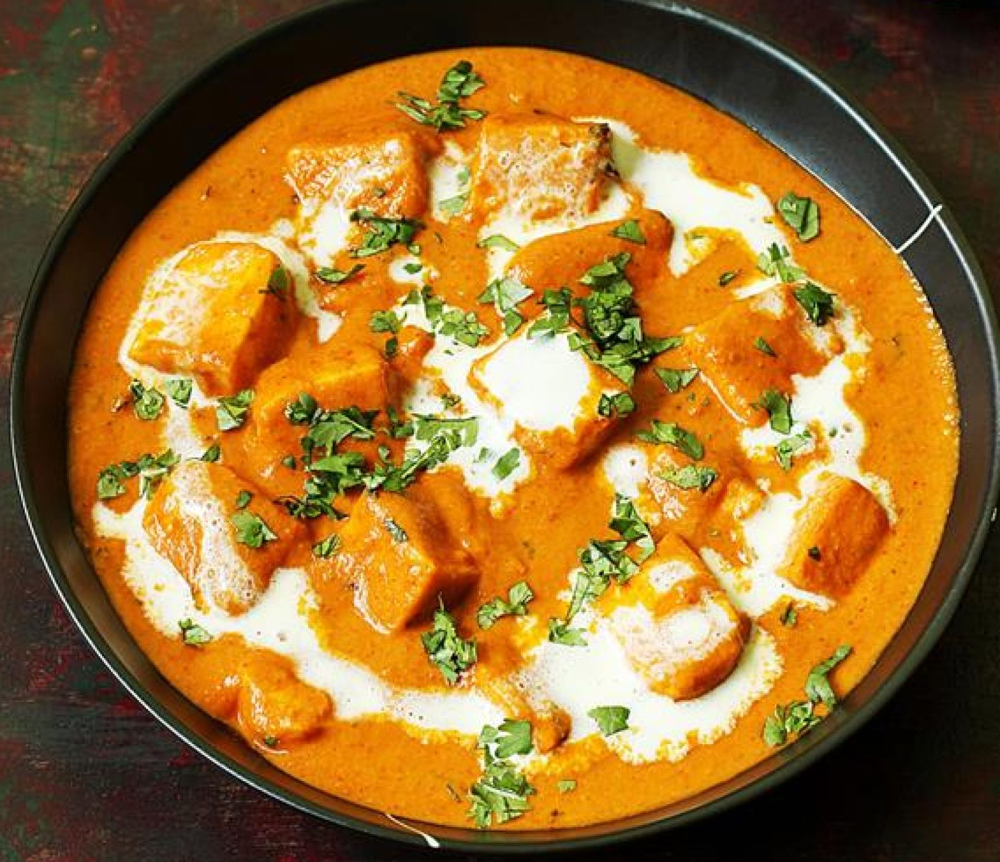

Paneer Butter Masala

Ingredients
Method
- Put 1 tbsp of oil into a large lidded frying pan over a medium heat and, when hot, add the cubes of 500g hard paneer. Fry for a couple of minutes until golden on all sides, turning regularly, then remove to a plate.
- Put the 3 tbsp unsalted butter into the same pan over a medium heat. When hot, add the 1 large brown onion and fry for around 10 minutes until translucent and turning golden.
- Add the 4cm ginger and 6 cloves of garlic, stir-fry for 2-3 minutes, then add the 800g tomato passata. Cover with the lid and cook for 12-15 minutes until reduced to a lovely thick sauce.
- Add the 1 tbsp kasoori methi, 1 tsp ground cinnamon, ¼ tsp ground cloves, ½ tsp chilli powder, 2 tbsp honey and 1½ tsp salt to the pan. Stir, then add the fried paneer, cover with a lid and cook for 5 minutes, or until cooked through. Add the 250g peas and 100ml double cream and cook for a further 5 minutes.
- To serve, scatter with the handful of toasted, flaked almonds and drizzle with a little extra cream. This curry is perfect with steamed, basmati rice.